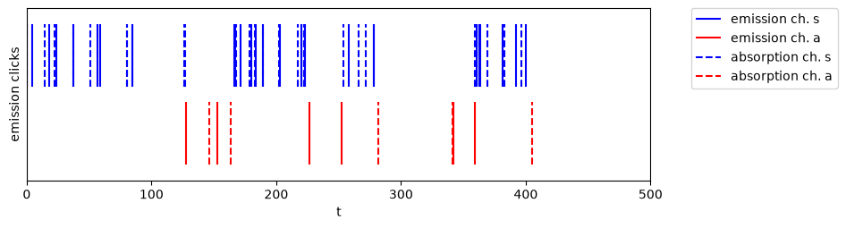
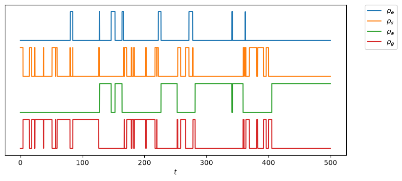
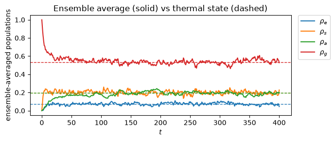
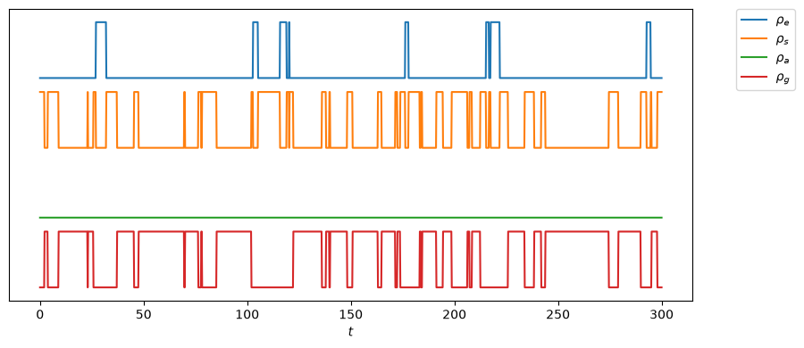
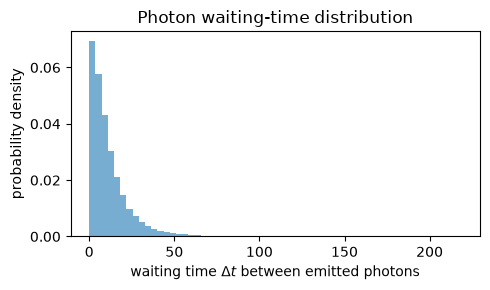
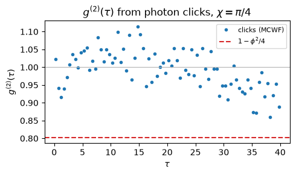

12.4. Dimer II: Quantum trajectories#
On the previous page we solved the dimer with the Lindblad master equation (steadystate and mesolve). Here we solve the same open-system dynamics with the Monte Carlo wavefunction (MCWF) (or quantum trajectory, quantum jump) method (mcsolve in QuTip). Instead of propagating a density matrix, the state follows a stochastic pure-state trajectory: it evolves under a non-Hermitian effective Hamiltonian and, at random times, undergoes a quantum jump through one of the collapse operators. The ensemble average over trajectories reproduces the master-equation density matrix, so every result of the previous page must re-emerge here.
The jump picture makes the physics of the theory page vivid:
a single trajectory hops between Dicke states, and the ensemble relaxes to the thermal (Boltzmann) state — the steady state (12.1);
as \(r_{12}\to 0\) the antisymmetric state \(|a\rangle\) becomes dark and traps a trajectory forever — broken ergodicity Broken Ergodicity seen directly;
the record of emission jumps is a simulated photon-click stream, from which we reconstruct \(g^{(2)}(\tau)\) and recover \(1-\phi^2/4\).
12.4.1. Setup#
The model is identical to the QME page. We add projectors onto the four Dicke states so
that a single mcsolve run reports the Dicke populations along each trajectory, and a
helper that drops the vanishing (dark) collapse operators when \(r_{12}\to 0\).
import matplotlib.pyplot as plt
import numpy as np
from qutip import *
# ---- constants (identical to the QME page) ----
omega0 = 1.0
gamma0 = 0.1
temperature = 1.0
NT = 1 / (np.exp(omega0 / temperature) - 1)
beta = omega0 / temperature
# ---- single-atom operators on the two-atom Hilbert space ----
i2 = qeye(2)
sz = [tensor(sigmaz(), i2), tensor(i2, sigmaz())]
sp = [tensor(sigmap(), i2), tensor(i2, sigmap())]
sm = [tensor(sigmam(), i2), tensor(i2, sigmam())]
# ---- product basis |ee>, |eg>, |ge>, |gg> ----
u = [tensor(basis(2, 0), basis(2, 0)),
tensor(basis(2, 1), basis(2, 0)),
tensor(basis(2, 0), basis(2, 1)),
tensor(basis(2, 1), basis(2, 1))]
# ---- Dicke (symmetric / antisymmetric) channel operators ----
ep = [(sp[0] + sp[1]) / np.sqrt(2), (sp[0] - sp[1]) / np.sqrt(2)]
em = [(sm[0] + sm[1]) / np.sqrt(2), (sm[0] - sm[1]) / np.sqrt(2)]
# ---- Dicke basis |e>, |s>, |a>, |g> ----
v = [u[0], (u[1] + u[2]) / np.sqrt(2), (u[1] - u[2]) / np.sqrt(2), u[3]]
dicke_labels = ["e", "s", "a", "g"]
# projectors used as e_ops to read off Dicke populations along a trajectory
P = [ket2dm(state) for state in v]
def G12(r12, theta):
xi = 2 * np.pi * r12
if xi == 0:
return gamma0
g = ((1 - np.cos(theta)**2) * np.sin(xi) / xi
+ (1 - 3 * np.cos(theta)**2) * (np.cos(xi) / xi**2 - np.sin(xi) / xi**3))
return g * gamma0 * 3 / 2
def system_dimer(r12, theta, drop_dark=False, tol=1e-12):
"""(H, c_ops) for the dimer, identical to the QME page.
The collapse operators are ordered
0: symmetric emission sqrt(gamma_s (N+1)) eta1^- (detected photon)
1: antisymmetric emission sqrt(gamma_a (N+1)) eta2^- (detected photon)
2: symmetric absorption sqrt(gamma_s N) eta1^+ (thermal)
3: antisymmetric absorption sqrt(gamma_a N) eta2^+ (thermal)
so col_which == 0 or 1 flags an emission. With drop_dark=True the collapse
operators whose rate vanishes (the a-channel at r12 -> 0) are removed, so
mcsolve does not carry null jump operators.
When the rate is smaller than tol, it is considered as vanished.
"""
# ---- unitary part of Hamiltonian
H = 0.5 * omega0 * (sz[0] + sz[1])
# ---- decay rates
gamma12 = G12(r12, theta)
gamma_s = gamma0 + gamma12
gamma_a = gamma0 - gamma12
# ---- collapse operators
specs = [(gamma_s * (NT + 1), em[0]),
(gamma_a * (NT + 1), em[1]),
(gamma_s * NT, ep[0]),
(gamma_a * NT, ep[1])]
c_ops = [np.sqrt(rate) * op for (rate, op) in specs
if not (drop_dark and rate < tol)]
return H, c_ops
12.4.2. A single quantum trajectory#
Because the Hamiltonian is diagonal in the Dicke basis and every collapse operator maps a Dicke state to another Dicke state, a trajectory started in a Dicke eigenstate stays a Dicke eigenstate until a jump between Dicke states \(\{|g\rangle, |s\rangle, |a\rangle, |e\rangle\}\) takes place. Each vertical line below is a quantum jump, blue in the symmetric channel and red in the asymmetric channel. The solid lines indicate emission and the dashed ones absorption. A thick line is actually two lines too close to be visually distinguished.
Note that clicks detected by the measurement device are emission. We cannot detect absorption in the actual optical experiment. Nevertheless, plotting the abosrption jumps helps to identify the types of transition. If there is no dashed line between two adjacent solid lines, no absorption happened between the two emissions, which indicates cascading transition from \(|e\rangle\) to \(|g\rangle\) took place, either through the symmetric state or the asymmetric state. (If you don’t see cascading emission, run the code until you see it. It will happens.)
First of all, we note that the symmetric channel (solid blue line in the plot) emits photons at higher rate than the asymmetric channel (red solid line) as predicted by the theory (Chapter 12.1). Furthermore, when cascading emission happens in the symmetric channel, two photons are emitted almost at the same time (no gap between two blue lines). That means the second transition from \(|s\rangle\) to \(|g\rangle\) take places immediately after the first transition from \(|e\rangle\) to \(|s\rangle\), indicating that two photons tend to arrive at the same time (bunching). On the other hand, the cascade in the asymmetric channel takes longer time. After the first transition, the system stays in \(|a\rangle\) for some time before emitting the second photon. This difference is a key to understand the second-order coherence.
theta = np.pi / 4 # dipole orientation, as on the QME page
r12 = 0.2 # r12 / lambda0
tlist = np.linspace(0, 500, 5000)
H, c_ops = system_dimer(r12, theta)
# one trajectory; with ntraj=1 the "average" IS the single run.
result1 = mcsolve(H, v[1], tlist, c_ops, e_ops=P, ntraj=1,
options={"keep_runs_results": True})
# jump record for the single trajectory (QuTiP 5: lists indexed by trajectory)
t_jump = np.asarray(result1.col_times[0])
ch_jump = np.asarray(result1.col_which[0])
t_emission_s = t_jump[ch_jump==0]
t_emission_a = t_jump[ch_jump==1]
t_absorption_s = t_jump[ch_jump==2]
t_absorption_a = t_jump[ch_jump==3]
print("** Jump counts **")
print(" symmetric channel: emission count={0:4d} absorption count={1:4d}".format(np.size(t_emission_s), np.size(t_absorption_s)))
print("asymmetric channel: emission count={0:4d} absorption count={1:4d}".format(np.size(t_emission_a), np.size(t_absorption_a)))
100.0%. Run time: 0.00s. Est. time left: 00:00:00:00
Total run time: 0.04s
** Jump counts **
symmetric channel: emission count= 27 absorption count= 28
asymmetric channel: emission count= 6 absorption count= 5
plt.figure(figsize=(9, 2.5))
# emissions: detector clicks
plt.vlines(t_emission_s, 1.5, 2.5, color="b", label="emission ch. s")
plt.vlines(t_emission_a, 0.25, 1.25, color="r", label="emission ch. a")
plt.vlines(t_absorption_s, 1.5, 2.5, color="b", ls='--',label="absorption ch. s")
plt.vlines(t_absorption_a, 0.25, 1.25, color="r", ls='--',label="absorption ch. a")
plt.ylabel("emission clicks")
plt.xlabel("t")
plt.xlim([0,500])
plt.ylim(0, 2.75)
plt.yticks([])
plt.legend(bbox_to_anchor=(1.30, 1), borderaxespad=0)
plt.show()

12.4.3. Quantum trajectories#
In the MCWF method, the wave function jumps from a Dicke state to another at a random time. The time evolution of the wave function between jumps is unitary. Since the Dicke states are eigen states of the Hamiltonian, the system stays in a Dicke state until a jump happens. In a single trajectory calculation, the occupation of the Dicke states is either \(0\) or \(1\). Only one state has \(1\) at each moment and the rests are \(0\). When a jump happened, “\(1\)” moves from a state to another. The following code plots such a trajectory.
Notice that transitions between \(|g\rangle\) and \(|s\rangle\) dominates. Jump to \(|a\rangle\) is not as frequent as other jumps. However, once \(|a\rangle\) is occupied, the system stays in it for longer time. This is again due to the small decay rate of the asymmetric channel.
plt.figure(figsize=(9, 4))
p = [result1.expect[k] for k in range(4)]
for k in range(4):
plt.plot(tlist,p[k].flatten()*0.8+(3-k),label=r"$\rho_{%s}$" % dicke_labels[k])
plt.yticks([])
plt.xlabel(r"$t$")
plt.legend(bbox_to_anchor=(1.15, 1), borderaxespad=0)
plt.show()

12.4.4. Ensemble average of state population#
In the master equation approach, the population of states averaged over the ensemble is obtained from the diagonal elements of the density matrix. In the jump method, at each moment of time, we have a state vector, from which we can calculate probability to obtain a particular state. However, the state vector fluctuates from one trajectory to another. Hence, we need to obtain many trajectories and take average over them. Averaging many trajectories must reproduce the master-equation result. In the following code, we take average over \(400\) trajectories.
The statistical error of a trajectory average falls as \(1/\sqrt{N_{\rm traj}}\). (Increase the number of samplings to get better statistics.)
The solid curves are the MCWF ensemble averages of probability \(p_k(t) = |\langle k | \Psi(t)\rangle|^2\) where \(k = \{e,s,a,g\}\). The dashed lines are the thermal
(Boltzmann) populations (12.1). They agree at long times, and
the agreement is independent of \(\Gamma_{12}\) — exactly as the theory page argued, since thermal equilibrium depends only on the energies.
ntraj = 400
tlist = np.linspace(0, 400, 400)
H, c_ops = system_dimer(r12, theta)
result2 = mcsolve(H, v[3], tlist, c_ops, e_ops=P, ntraj=ntraj, options={"progress_bar": False}) # res.expect is averaged
# thermal populations, Dicke order [e, s, a, g]
Zerg = (1 + np.exp(-beta))**2
thermal = [np.exp(-2 * beta) / Zerg, np.exp(-beta) / Zerg,
np.exp(-beta) / Zerg, 1 / Zerg]
plt.subplots(figsize=(7, 3))
for k in range(4):
plt.plot(tlist, result2.expect[k], color="C%d" % k,
label=r"$\rho_{%s}$" % dicke_labels[k])
plt.axhline(thermal[k], color="C%d" % k, ls="--", lw=1)
plt.xlabel(r"$t$")
plt.ylabel("ensemble-averaged populations")
plt.title("Ensemble average (solid) vs thermal state (dashed)")
plt.legend(bbox_to_anchor=(1.30, 1), borderaxespad=0,fontsize=8)
plt.legend(loc="center right", )
plt.legend(bbox_to_anchor=(1.15, 1), borderaxespad=0)
plt.tight_layout()
plt.show()
tail = tlist > 0.5 * tlist[-1]
ss1 = [result2.expect[k][tail] for k in range(4)]
ss2 = [ss1[k]**2 for k in range(4)]
ss1_mean = [ss1[k].mean() for k in range(4)]
ss2_mean = [ss2[k].mean() for k in range(4)]
ss_dev = [np.sqrt(ss2_mean[k] - ss1_mean[k]**2) for k in range(4)]
print("Dicke MCWF (std. dev.) thermal")
for k in range(4):
print(" {0:3s} {1:8.4f} ({2:8.4f}) {3:8.4f}".format(
dicke_labels[k], ss1_mean[k], ss_dev[k], thermal[k]))

Dicke MCWF (std. dev.) thermal
e 0.0770 ( 0.0129) 0.0723
s 0.1977 ( 0.0194) 0.1966
a 0.1891 ( 0.0160) 0.1966
g 0.5362 ( 0.0252) 0.5344
12.4.5. Broken ergodicity: the dark antisymmetric state#
Set \(r_{12}\to 0\). Then \(\Gamma_{12}\to\gamma_0\), so \(\gamma_a=\gamma_0-\Gamma_{12}\to 0\) and the antisymmetric collapse operators vanish: \(|a\rangle\) is completely decoupled from the field and is an eigenstate of \(H\). In the trajectory picture this is unmistakable:
a trajectory started in \(|a\rangle\) never jumps — it is frozen for all time;
a trajectory started outside \(|a\rangle\) never enters it, and relaxes among \(\{|gg\rangle, |s\rangle, |ee\rangle\}\).
Hence the ensemble depends on the initial condition — the definition of broken ergodicity — and, starting with no \(|a\rangle\) population, it reaches the non-ergodic steady state (12.2) rather than the thermal one.
In the following the system evolves from \(|s\rangle\). Notice that \(|a\rangle\) never be occupied as the quantum trajectory indicates.
Starting from \(|s\rangle\) (no \(|a\rangle\) component), the trajectory average converges to the non-ergodic steady state with \(\rho_{aa}=0\). It is thermal equilibrium within a reduced Hilbert space orthogonal to \(|a\rangle\) with the reduced partition function \(Z = 1 + e^{-\omega_0/T} + e^{+\omega_0/T}\).
H0, c0 = system_dimer(0.0, theta, drop_dark=True) # a-channel removed
tlist = np.linspace(0, 300, 1500)
# (a) start in |a>: dark, frozen. (b) start in |ee>: relaxes, never visits |a>.
result3 = mcsolve(H0, v[1], tlist, c0, e_ops=P, ntraj=1, options={"keep_runs_results": True,"progress_bar": False})
plt.figure(figsize=(9, 4))
p = [result3.expect[k] for k in range(4)]
for k in range(4):
plt.plot(tlist,p[k].flatten()*0.8+(3-k),label=r"$\rho_{%s}$" % dicke_labels[k])
plt.yticks([])
plt.xlabel(r"$t$")
plt.legend(bbox_to_anchor=(1.15, 1), borderaxespad=0)
plt.tight_layout()
plt.show()

Starting from \(|s\rangle\), the trajectory average converges to the non-ergodic steady state with \(\rho_{aa}=0\). It is thermal equilibrium within a reduced Hilbert space orthogonal to \(|a\rangle\) with the reduced partition function \(Z = 1 + e^{-\omega_0/T} + e^{+\omega_0/T}\). The ensemble average of the MCWF simulation agrees with theoretical prediction within the statistical error.
ntraj = 400
result4 = mcsolve(H0, v[1], tlist, c0, e_ops=P, ntraj=ntraj,options={"progress_bar": False})
Znon = 1 + np.exp(-beta) + np.exp(beta)
noneq = [np.exp(-beta) / Znon, 1 / Znon, 0.0, np.exp(beta) / Znon] # [e, s, a, g]
tail = tlist > 0.5 * tlist[-1]
ss1 = [result4.expect[k][tail] for k in range(4)]
ss2 = [ss1[k]**2 for k in range(4)]
ss1_mean = [ss1[k].mean() for k in range(4)]
ss2_mean = [ss2[k].mean() for k in range(4)]
ss_dev = [np.sqrt(ss2_mean[k] - ss1_mean[k]**2) for k in range(4)]
print("Dicke MCWF (std. dev.) thermal")
for k in range(4):
print(" {0:3s} {1:8.4f} ({2:8.4f}) {3:8.4f}".format(
dicke_labels[k], ss1_mean[k], ss_dev[k], noneq[k]))
Dicke MCWF (std. dev.) thermal
e 0.0847 ( 0.0118) 0.0900
s 0.2470 ( 0.0214) 0.2447
a 0.0000 ( 0.0000) 0.0000
g 0.6683 ( 0.0226) 0.6652
12.4.6. Waiting-time distribution of emitted photons#
The emission jumps (collapse operators 0 and 1) are the photon-detection events. The distribution of delays between consecutive emissions is suppressed at short \(\Delta t\): after an emission the dimer must be re-excited before it can emit again. That short-time suppression is the time-domain face of the antibunching we quantify next with \(g^{(2)}(\tau)\).
r12 = 0.2
H, c_ops = system_dimer(r12, theta)
tlist = np.linspace(0, 2000, 4000)
ntraj = 1000
res = mcsolve(H, v[3], tlist, c_ops, e_ops=[], ntraj=ntraj,
options={"keep_runs_results": True,"progress_bar": False})
waits = []
for k in range(ntraj):
ct = np.asarray(res.col_times[k])
cw = np.asarray(res.col_which[k])
emit = np.sort(ct[(cw == 0) | (cw == 1)])
if emit.size > 1:
waits.append(np.diff(emit))
waits = np.concatenate(waits)
plt.figure(figsize=(5, 3))
plt.hist(waits, bins=60, density=True, alpha=0.6)
plt.xlabel(r"waiting time $\Delta t$ between emitted photons")
plt.ylabel("probability density")
plt.title("Photon waiting-time distribution")
plt.tight_layout()
plt.show()
print("emitted photons: {:d}".format(waits.size + len(waits)))
mean = waits.mean()
dev = np.sqrt((waits**2).mean() - mean**2)
print("mean waiting time = ",mean)
print("standard deviation = ",dev)
if dev < 0.95*mean:
print("likely sub-poissonian")
elif dev > 1.05*mean:
print("likely super-poissonian")
else:
print("likely poissonian")

emitted photons: 338466
mean waiting time = 11.665031093935673
standard deviation = 12.572558723933598
likely super-poissonian
12.4.7. Reconstructing \(g^{(2)}(\tau)\) from the photon clicks#
A detector at angle \(\chi\) measures the far-field operator \(D^-=\sigma_1^- + e^{i\phi} \sigma_2^-\) with \(\phi = k_0 r_{12}\cos\chi\). From the intensity of the previous page, the symmetric (\(\eta_1\)) and antisymmetric (\(\eta_2\)) emissions contribute to the detected signal with geometric weights
We treat each emission jump as a weighted click and build the normalised delay-coincidence histogram \(g^{(2)}(\tau)\); its zero-delay bin is \(g^{(2)}(0)\).
A caveat worth stating for students. mcsolve jumps in the decay eigen-channels
\(\eta_1,\eta_2\), whose rates \(\gamma_s\neq\gamma_a\) differ, so this weighted-click model is
an incoherent approximation to the true coherent detector \(D^-\) and reproduces
\(1-\phi^2/4\) only to leading order in \(\phi\). We therefore also compute the exact
\(g^{(2)}(0)\) directly from the steady state,
\(g^{(2)}(0)=(4-\phi^2)\rho_{ee}^{ss}/[4(\rho_{ee}^{ss}+\rho_{ss}^{ss})^2]=1-\phi^2/4\),
as the rigorous anchor.
def g2_0_exact(r12, chi, theta=np.pi / 4):
"""Deterministic g2(0) from the steady state (the rigorous reference)."""
phi = 2 * np.pi * r12 * np.cos(chi)
H, c_ops = system_dimer(r12, theta)
rho = steadystate(H, c_ops)
ree = expect(P[0], rho)
rss = expect(P[1], rho)
return (4 - phi**2) * ree / (4 * (ree + rss)**2), phi
def g2_from_clicks(r12, chi, theta=np.pi / 4, ntraj=600, T=400.0, nt=4000,
tau_max=40.0, dtau=0.5, psi0=None):
"""g2(tau) reconstructed from the weighted emission-click record."""
phi = 2 * np.pi * r12 * np.cos(chi)
weight = {0: 2 - phi**2 / 2, 1: phi**2 / 2} # s-channel, a-channel
H, c_ops = system_dimer(r12, theta)
tlist = np.linspace(0, T, nt)
if psi0 is None:
psi0 = v[3]
res = mcsolve(H, psi0, tlist, c_ops, e_ops=[], ntraj=ntraj,
options={"keep_runs_results": True,"progress_bar": False})
edges = np.arange(0.0, tau_max + dtau, dtau)
coinc = np.zeros(edges.size - 1)
wsum = 0.0
for k in range(ntraj):
ct = np.asarray(res.col_times[k])
cw = np.asarray(res.col_which[k])
keep = (cw == 0) | (cw == 1)
t = ct[keep]
w = np.array([weight[int(c)] for c in cw[keep]])
order = np.argsort(t)
t, w = t[order], w[order]
wsum += w.sum()
for i in range(t.size): # ordered pairs, positive delay
dt = t[i + 1:] - t[i]
in_win = dt < tau_max
if not np.any(in_win):
continue
b = np.floor(dt[in_win] / dtau).astype(int)
np.add.at(coinc, b, w[i] * w[i + 1:][in_win])
total_T = ntraj * T
rate = wsum / total_T # mean weighted singles rate
g2 = coinc / (rate**2 * total_T * dtau) # -> 1 for uncorrelated clicks
tau = 0.5 * (edges[:-1] + edges[1:])
return tau, g2, phi
Reconstruct the curve at \(\chi=\pi/4\) and compare the zero-delay value with both the exact steady-state result and the analytic \(1-\phi^2/4\).
chi = np.pi / 4
tau, g2, phi = g2_from_clicks(r12=0.2, chi=chi, ntraj=600, T=400.0)
g2_exact, _ = g2_0_exact(0.2, chi)
theory = 1 - phi**2 / 4
plt.figure(figsize=(5, 3))
plt.plot(tau, g2, "o", ms=3, label="clicks (MCWF)")
plt.axhline(theory, color="C3", ls="--", label=r"$1-\phi^2/4$")
plt.axhline(1.0, color="0.7", lw=0.8)
plt.xlabel(r"$\tau$")
plt.ylabel(r"$g^{(2)}(\tau)$")
plt.title(r"$g^{(2)}(\tau)$ from photon clicks, $\chi=\pi/4$")
plt.legend(fontsize=8)
plt.tight_layout()
plt.show()
print("g2(0): clicks (bin 0) = {:.4f}".format(g2[0]))
print(" exact steady-state = {:.4f}".format(g2_exact))
print(" analytic 1 - phi^2/4 = {:.4f}".format(theory))

g2(0): clicks (bin 0) = 1.0231
exact steady-state = 0.8026
analytic 1 - phi^2/4 = 0.8026
12.4.8. Self-check: MCWF vs. analytic theory#
The cell below verifies the page against the theory. The deterministic identities (steady state \(=\) thermal state; exact \(g^{(2)}(0)=1-\phi^2/4\); non-ergodic steady state) are hard assertions. The stochastic MCWF estimates are reported with a Monte-Carlo tolerance and warn rather than abort, since they carry \(1/\sqrt{N_{\rm traj}}\) noise. Rerun after changing the model or parameters.
def _report(name, ok, detail="", hard=True):
tag = "PASS" if ok else ("FAIL" if hard else "WARN")
print("[{:4}] {}{}".format(tag, name, " " + detail if detail else ""))
return ok
ok_hard = True
# --- deterministic: exact g2(0) = 1 - phi^2/4 for several (r12, chi) ---
for r12_, chi_ in [(0.2, np.pi / 2), (0.2, np.pi / 4), (0.2, 0.0), (0.1, np.pi / 4)]:
g2e, phi_ = g2_0_exact(r12_, chi_)
ok = abs(g2e - (1 - phi_**2 / 4)) < 1e-4
ok_hard &= _report("exact g2(0) = 1 - phi^2/4 (r12={:.2f}, chi={:.4f})".format(r12_, chi_),
ok, "exact {:.6f} theory {:.6f}".format(g2e, 1 - phi_**2 / 4))
# --- deterministic: ergodic steady state == thermal state ---
Hs, cs = system_dimer(0.2, np.pi / 4)
rho = steadystate(Hs, cs)
Zerg = (1 + np.exp(-beta))**2
therm = [np.exp(-2 * beta) / Zerg, np.exp(-beta) / Zerg, np.exp(-beta) / Zerg, 1 / Zerg]
dev = max(abs(expect(P[k], rho) - therm[k]) for k in range(4))
ok_hard &= _report("steady state = thermal state", dev < 1e-6,
"max deviation {:.2e}".format(dev))
# --- deterministic: non-ergodic steady state is stationary (a-channel removed) ---
# steadystate() is NOT unique here (|a> is a decoupled dark state), so we build the
# non-ergodic state by hand and verify L[rho] = 0 through the Lindblad right-hand side.
Hn, cn = system_dimer(0.0, np.pi / 4, drop_dark=True)
Znon = 1 + np.exp(-beta) + np.exp(beta)
noneq = [np.exp(-beta) / Znon, 1 / Znon, 0.0, np.exp(beta) / Znon] # [ee, s, a, gg]
rho_ne = noneq[0] * P[0] + noneq[1] * P[1] + noneq[3] * P[3]
def _lindblad_rhs(H, c_ops, rho):
out = -1j * (H * rho - rho * H)
for c in c_ops:
out += c * rho * c.dag() - 0.5 * (c.dag() * c * rho + rho * c.dag() * c)
return out
drift = _lindblad_rhs(Hn, cn, rho_ne).norm()
ok_hard &= _report("non-ergodic Boltzmann state is stationary (||L rho|| = 0)",
drift < 1e-8, "||L rho|| = {:.2e}".format(drift))
# --- stochastic: MCWF ensemble reaches the thermal state (soft) ---
tl = np.linspace(0, 400, 400)
r_e = mcsolve(Hs, v[3], tl, cs, e_ops=P, ntraj=400,options={"progress_bar": False})
tailm = tl > 0.5 * tl[-1]
dev_mc = max(abs(r_e.expect[k][tailm].mean() - therm[k]) for k in range(4))
_report("MCWF ensemble ~ thermal state (400 traj)", dev_mc < 0.02,
"max deviation {:.3f}".format(dev_mc), hard=False)
# --- stochastic: click g2(0) near theory (soft; leading-order model) ---
_, g2c, phic = g2_from_clicks(0.2, np.pi / 4, ntraj=400, T=300.0)
_report("click g2(0) ~ 1 - phi^2/4", abs(g2c[0] - (1 - phic**2 / 4)) < 0.1,
"clicks {:.4f} theory {:.4f}".format(g2c[0], 1 - phic**2 / 4), hard=False)
print("\n" + ("DETERMINISTIC CHECKS PASSED" if ok_hard else "DETERMINISTIC CHECKS FAILED"))
assert ok_hard, "Self-check failed: a deterministic identity disagrees with the theory."
[PASS] exact g2(0) = 1 - phi^2/4 (r12=0.20, chi=1.5708) exact 1.000000 theory 1.000000
[PASS] exact g2(0) = 1 - phi^2/4 (r12=0.20, chi=0.7854) exact 0.802608 theory 0.802608
[PASS] exact g2(0) = 1 - phi^2/4 (r12=0.20, chi=0.0000) exact 0.605216 theory 0.605216
[PASS] exact g2(0) = 1 - phi^2/4 (r12=0.10, chi=0.7854) exact 0.950652 theory 0.950652
[PASS] steady state = thermal state max deviation 1.39e-16
[PASS] non-ergodic Boltzmann state is stationary (||L rho|| = 0) ||L rho|| = 0.00e+00
[PASS] MCWF ensemble ~ thermal state (400 traj) max deviation 0.011
[WARN] click g2(0) ~ 1 - phi^2/4 clicks 1.0152 theory 0.8026
DETERMINISTIC CHECKS PASSED